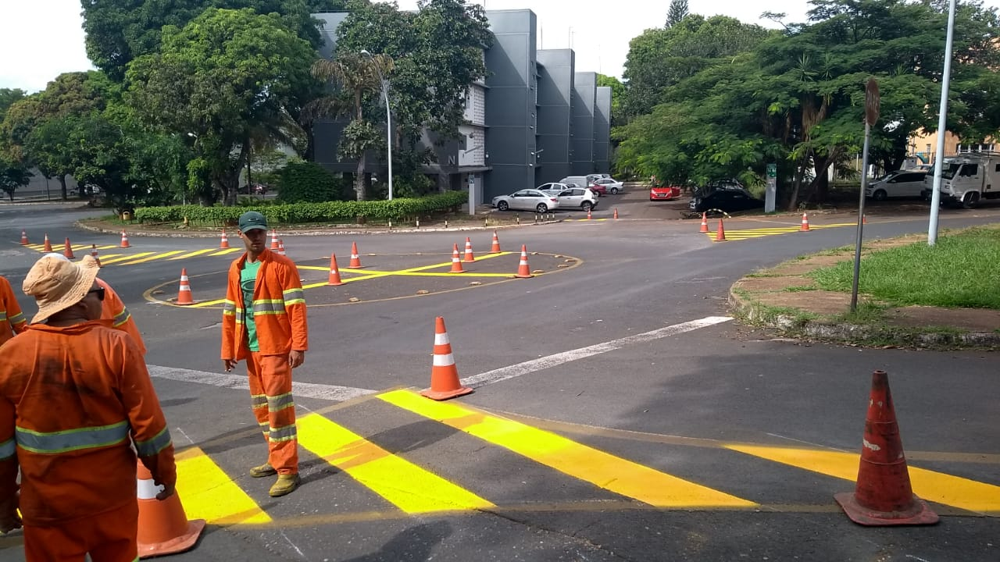

História do DETRAN
No Governo de Nilo Coelho, em 1969, nasceu o DETRAN – Departamento Estadual de Trânsito de Pernambuco, através do decreto de Lei Criado nº. 23 do Governo do Estado, como Autarquia de Administração Indireta, vinculado a Secretaria de Segurança Pública, tendo como missão fiscalizar todo o trânsito do estado, assim como emitircarteiras de habilitação, liberação de veículos, entre outros serviços ligados a esta modalidade: DETRAN-PE ou e-mail